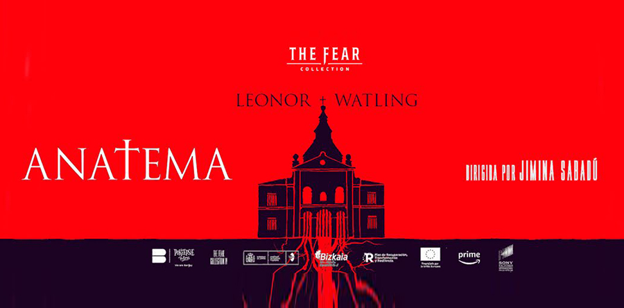
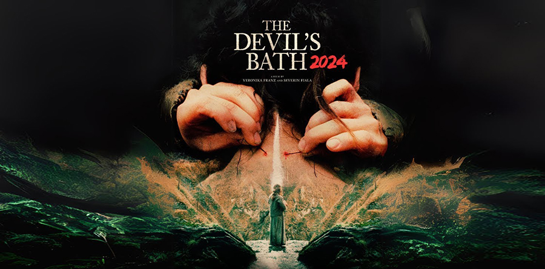
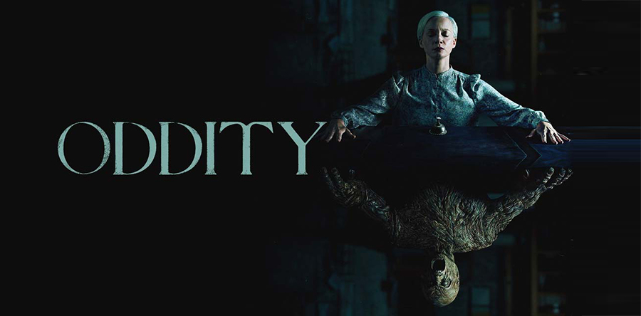

CRÍTICAS

Tercera entrega de The Fear Collection con curas y monjas participando en una rave subterránea
Tenemos aquí la nueva entrega de The Fear Collection, una serie de películas de terror producidas por Álex de la Iglesia y Carolina Bang, que bajo el amparo de Prime Video nos van suministrando películas de género con cierta regularidad. Tras Veneciafrenia del propio de la Iglesia, y Venus de Jaume Balagueró, nos llega la tercera entrega (en realidad sería la cuarta, pero hubo una cancelación, o tal vez un aplazamiento entre medias), titulada Anatema, y dirigida por la debutante con el mejor nombre del mundo: Jimina Sabadú. Si en la primera se nos mostraba un pintoresco slasher, y en la segunda se nos hablaba de edificios encantados y maldiciones, aquí tenemos una historia de fantasmas y demonios con una gran presencia de curas y monjas. La fiesta. Hay una antigua iglesia en Madrid (porque recordemos que si no ocurre en Madrid... no ocurre) que aguarda en su interior una antigua presencia maligna que por mucho que se haya intentado encerrar, no han sido más que fútiles intentos temporales. Ahora, esa energía está suelta y preparada para aterrorizar al mundo eclesiástico. Evitar la destrucción de la santa sede depende de la habilidad de una monja, quien con ayuda de una cuadrilla de sacerdotes y otras monjas (a los que me gusta pensar que se llaman a sí mismos “Los rezadores”), luchará contra el Maligno para salvar nuestras almas pecadoras mientras van raptando niños para venderlos a las familias ricas (esto no aparece en la película, pero imagino que habrán suprimido esa parte en el montaje final). Vayamos con lo bueno. Me ha gustado el diseño de los “monstros”, sumado a que hay varias escenas con una estética muy potente. El diseño de producción, tanto de artefactos, escenarios y diferentes entes dementes, están por encima de la media de lo que solemos ver. Sobre todo en el clímax final, que si bien argumentalmente es delirante, visualmente es impactante, retorcido y extrañamente bonito. Bien ahí.

EL BAÑO DEL DIABLO
El baño del diablo no está basada en una novela, sino en un libro de divulgación histórica que explica que, en la Europa de aquella época, hay documentados centenares de casos de “suicidio femenino por proxy”, es decir de mujeres que tenían tendencias suicidas pero que, para evitar ir al infierno (el suicidio era pecado mortal) cometían crímenes atroces y automáticamente se entregaban a las autoridades a fin de ser ajusticiadas, lo cual incluía el perdón del cura de turno que les permitiría entrar en el cielo. Es un asunto que hiela la sangre, algo que la película también consigue de manera bastante certera gracias sobre todo a una mortecina puesta en escena, que recuerda a La bruja, y a una interpretación fuera de serie de la actriz protagonista, Anja Plaschg. El baño del diablo tiene, si acaso, dos problemas. Uno de ellos es su lentitud contemplativa, a ratos exasperante, y el otro es cierta falta de empatía hacia la protagonista, a la que observamos con la frialdad de un entomólogo que le va arrancando patas a un insecto para ver qué ocurre; paradójicamente, este es un modo bastante astuto de demostrarnos lo fácil y orgánico que debió de ser que este tipo de cosas llegaran a ocurrir (la banalidad del Mal y eso), pero queda la duda de si a los autores de la cinta les interesa Agnes como persona, o solo como vehículo de dolor y humillación que les permita ilustrar su argumentario. Salvando las distancias, esta película me genera los mismos dilemas morales que Martyrs, otro título en el que las protagonistas las pasaban morrocotudas y no estaba claro que al director le importasen. Quizás no sea necesario pasar por el mal trago de ver algo tan jodido como El baño del diablo, pero desde luego es necesario que exista

EL BAÑO DEL DIABLO
Hablamos de mini universo porque la principal localización de Oddity es la casa del doctor y la hermana de Darcy. En ella se sienten presencias extrañas y donde se producen las escenas más inquietantes. Y es que el cine de Mc Carthy se beneficia de los pequeños espacios, de los ruidos extraños de una habitación, de esas escenas pausadas que hacen que la tensión aumente… Esto ya sucedía así en Caveat, donde toda la historia acontecía en una casa destartalada, con muy mal rollo, tal y como sucede en esta película. En el cine actual, donde todo ya está inventado, es muy importante cualquier rasgo diferencial que haga destacar la película respecto al resto. Oddity lo consigue, porque no es solamente una película de casa con fantasmas, sino que la incorporación del personaje de la medium, con todo lo que conlleva (sus poderes, su conexión entre los dos mundos y su sala de reliquias malditas) le da un plus que hace que estemos ante una de las películas del cine de terror más redondas del año.